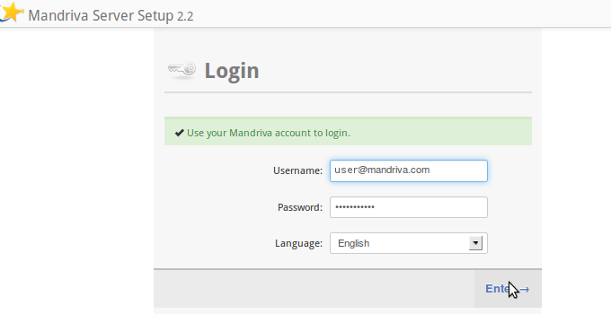
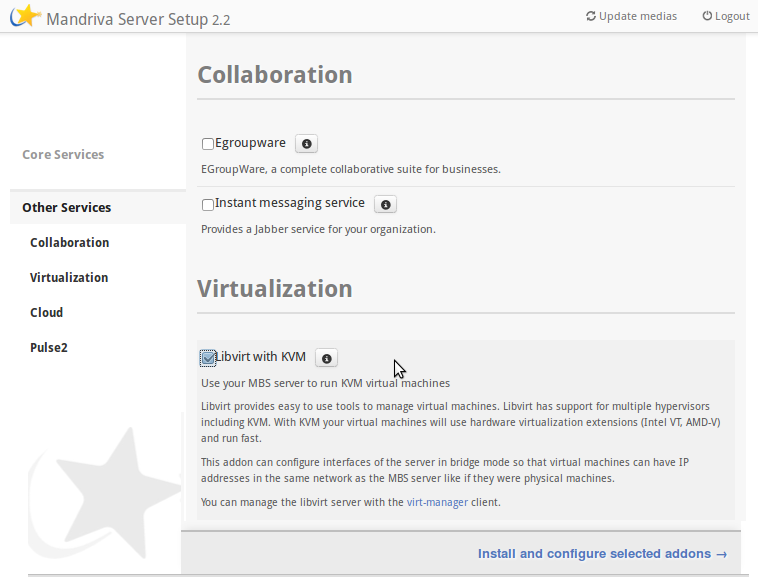
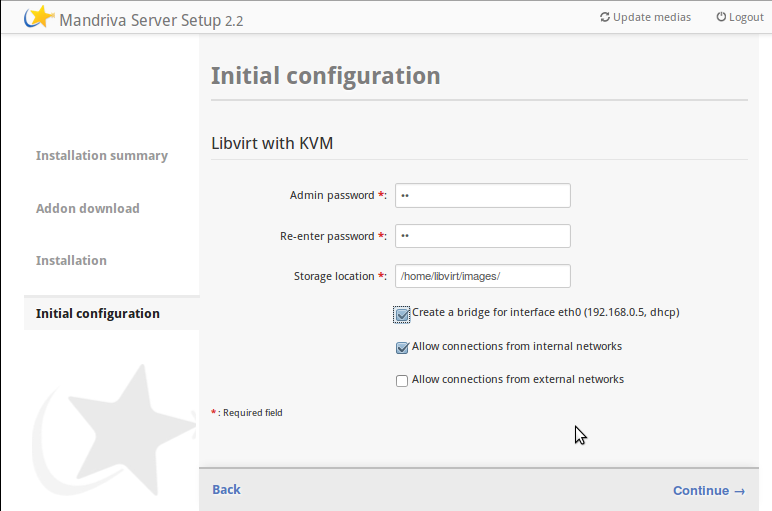
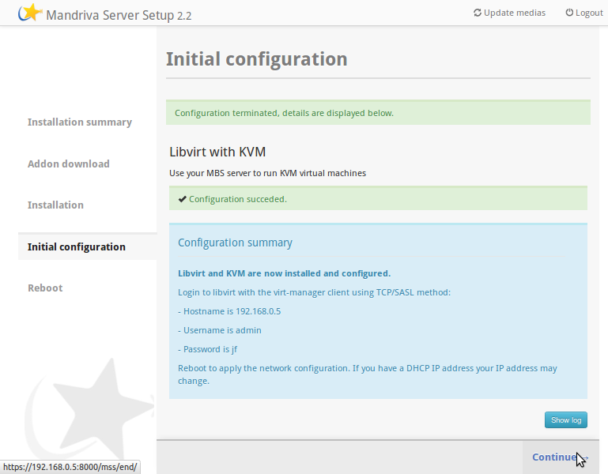
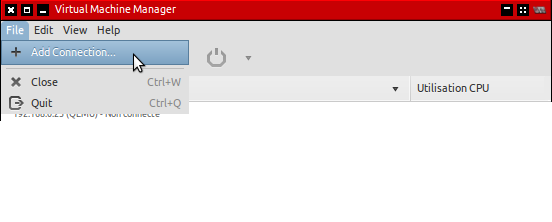
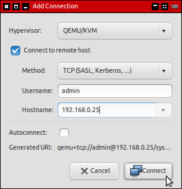
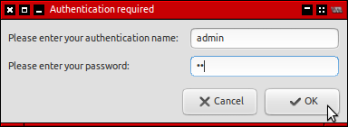
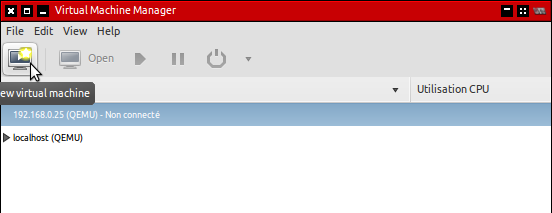
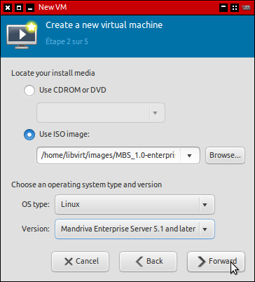

Installing Libvirt on MBS
Libvirt for MBS is available via Mandriva Service Place. To install
it, it is necessary to log on MSS with your 'my' account.

Go to 'Other services' and select 'Libvirt with KVM' then launch the
installation..

At the configuration step:
- Choose the password you want to use to acces the
hypervisor,
- Choose the directory where you want to store you .iso
files and your virtual disks,
- If you want your virtual machines to directly access
your network (and for example the DHCP server), check the
'Create a bridge'. Otherwise, your virtual machines will be
in an isolated network. They can still access the outside
through a NAT.

Complete the installation and restart the host for finishing the
configuration.

Installing some virtual machines
Connect your new libvirt installation using 'Virtual
Manager'.

Select :
- Connect to remote host,
- Method TCP(SASL, Kerberos...) ;
Fill :
- 'admin' as the user name,
- The IP adress of your mbs installation or its host
name.

When connecting, use 'admin' as the username and enter the password
chosen during configuration with MSS.

You can now begin installing virtual machines on your MBS system
(after putting the necessary .iso files in the correct installation
folder).


...